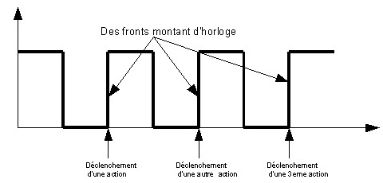

Quelques trucs à connaître
Un titre (taille 3)
Un titre (taille 4)
Un titre (taille 5)
Un titre (taille 6)
Un 1er paragraphe. On remarque qu'un saut de ligne dans le code source, ne correspond pas à un saut de ligne dans le navigateur.
Caractères spéciaux
En UTF-8, pas de souci pour ces caractères spéciaux : € ≤ ≥ ≠ ...
Cependant quelques caractères spéciaux doivent être écrits en
entités HTML
Voici ci-dessous une liste (ul : unordered list) où chaque élément
est appelé un list item (li) :
- < : less than
- > : greater than
- & : esperluette en français, ampersand en anglais)
- : un espace insécable permet d'empêcher un retour à la ligne sur les blocs de trois chiffres d'un nombre long, comme 123 456 789 101 112.
Code source
Dans un bon navigateur, on peut visualiser le code source de toute page HTML en faisant :
- Chrome : Menu → Plus d'outils → Outils Développement (puis onglet sources)
- Firefox : Menu → Développement Web → Code source / ou / Outils Développement
Le W3C validator
Le World Wide Web Consortium "W3C" est un organisme
régissant les règles du web.
Ce consortium est présidé par le fondateur du Web : Sir
Tim Berners-Lee (et lauréat du prix Turing).
Dernière chose, last but not least, le W3C met à disposition un
validateur de code HTML, ici :
Le processeur d'un ordinateur : Horloge et chaîne de traitement
Horloge
Pipeline (chaîne de traitement)
Définition d'un pipeline
En microarchitecture, un pipeline (ou chaîne de traitement), consiste à découper une instruction en plusieurs étapes.
Avec un pipeline, le processeur peut commencer une nouvelle instruction sans avoir terminé la précédente.
==> Donc un gain de temps !
Processeur sans pipeline (chaîne de traitement)
Considérons ces 5 étapes nécessaires pour traiter une instruction :
| code | dénomination | description |
|---|---|---|
| IF | Instruction Fetch Fetch = Va chercher |
Charge l'instruction à exécuter dans le pipeline |
| ID | Instruction Decode | Décode l'instruction et adresse les registres |
| EX | Execute | Exécute l'instruction (par l'unité arithmétique et logique : ALU) |
| MEM | Memory |
Accède à la mémoire : * soit en lecture : dans le cas d'une instruction du type STORE * soit en écriture : dans le cas d'un LOAD |
| WB | Write Back |
Ecrit le résultat dans un registre. Une écriture en registre WB fait suite à : * un LOAD (RAM → registre) * un MOV (registre → registre) * ou un calcul de l'ALU |
En supposant que chaque étape met 1 cycle d'horloge pour s'exécuter.
==> Il faut normalement 5 cycles pour exécuter une instruction !
==> Il faut 15 cycles pour réaliser 3 instructions !!!
Processeur avec pipeline (chaîne de traitement)
Le 1er ordinateur à utiliser cette technique est l'IBM Stretch,*
conçu en 1961.
C'est une forme de multitâche .. comparable à une ligne de montage en industrie.
Chacune des étapes d’un pipeline est appelé étage.
Le nombre d'étages d'un pipeline est appelé sa profondeur.
Pour un processeur doté d'un pipeline à 5 étages, il faut 9 cycles pour
exécuter 5 instructions.
À t = 5, tous les étages du pipeline sont sollicités, et les 5 opérations
ont lieu en même temps.
Aujourd'hui les processeurs ont des profondeurs supérieures à 10.